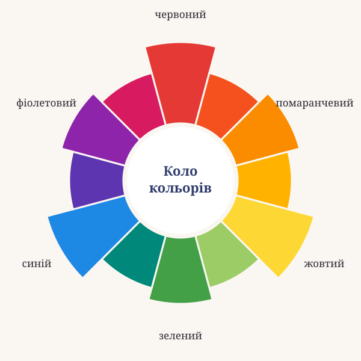
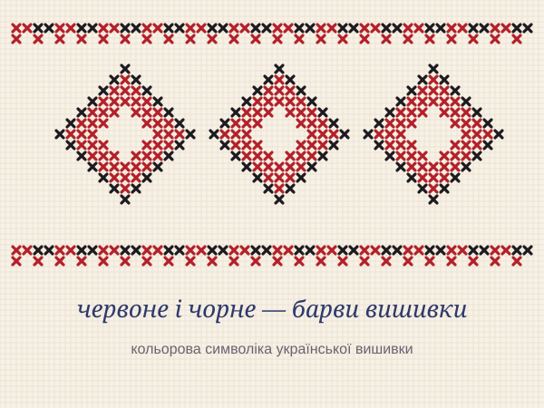

в українській мові та розвитку символізму
Колористика — наука про колір, що об'єднує знання про природу кольору, його основні характеристики, колірні контрасти, «мову» кольору, колірну культуру, символізм.
Назва «колір» відома ще в латинській мові (лат. cŏlor) з такими значеннями:

В українській мові XVIII століття часто вживалися загальні назви кольорів. Широко використовувалося слово фарба (з німецької Farbe), від якого утворилися слова фарбований, офарбоване, а також назви майстрів: фарбейник (фарбувальник), фарбелниця (жінка, що фарбує).
Найдавнішими вважаються назви, що втратили своє первісне значення: білий, жовтий, зелений, сірий, чорний. Вони — спільне надбання всіх слов'янських мов. До давніх належать і рудий, синій, червоний, голубий. Пізніше з'явилися назви, які легко пояснити: васильковий — кольору квітки волошки. А масті коней дали слова буланий, вороний, гнідий, зозулястий.

Кожен колір має свою історію та значення. Натискай на квадратики, щоб дізнатися більше.
Символізм зароджується у Франції у ІІ половині ХІХ століття. З 1880 року С. Малларме збирав у своєму літературному салоні молодих французьких поетів.
Передсимволізм (до 1917 р.): М. Вороний, О. Олесь, Г. Чупринка, П. Карманський, М. Філянський.
Львівське угруповання «Молода муза» (1906–1909): В. Пачовський, Б. Лепкий, М. Яцків та інші.
Журнал «Українська хата», що виходив у Києві у 1909–1914 рр.